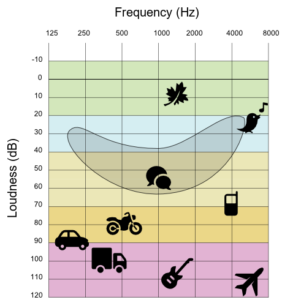

Use of binary to store data
A1.2 Data representation and computer logic
A1.2.2 Explain how binary is used to store data.
There are several different ways in which computers use bits to store text, that is individual characters and strings, photos or images, sounds, music and video. In this section, we will look at some common ones and then look at the pros and cons of each representation.
Text
ASCII
Count how many different characters that you could type into a text editor using your keyboard. (Don’t forget to count both of the symbols that share the number keys, and the symbols to the side that are for punctuation!)
The collective name for upper case letters, lower case letters, numbers, and symbols is characters e.g. a, D, 1, h, 6, *, ], and ~ are all characters. Importantly, a space is also a character.
If you counted correctly, you should find that there were more than 64 characters, and you might have found up to around 95. Because 6 bits can only represent 64 characters, we will need more than 6 bits; it turns out that we need at least 7 bits to represent all of these characters as this gives 128 possible patterns. This is exactly what the ASCII representation for text does.
In the previous section, we explained what happens when the number of dots was increased by 1. Can you explain how we knew that if 6 bits is enough to represent 64 characters, then 7 bits must be enough to represent 128 characters?
Each pattern in ASCII is usually stored in 8 bits, with one wasted bit, rather than 7 bits. However, the left-most bit in each 8-bit pattern is a 0, meaning there are still only 128 possible patterns. Where possible, we prefer to deal with full bytes (8 bits) on a computer, this is why ASCII has an extra wasted bit.
Here is a table that shows the patterns of bits that ASCII uses for each of the characters.
| Binary | Char | Binary | Char | Binary | Char |
|---|---|---|---|---|---|
| 0100000 | Space | 1000000 | @ | 1100000 | ` |
| 0100001 | ! | 1000001 | A | 1100001 | a |
| 0100010 | " | 1000010 | B | 1100010 | b |
| 0100011 | # | 1000011 | C | 1100011 | c |
| 0100100 | $ | 1000100 | D | 1100100 | d |
| 0100101 | % | 1000101 | E | 1100101 | e |
| 0100110 | & | 1000110 | F | 1100110 | f |
| 0100111 | ' | 1000111 | G | 1100111 | g |
| 0101000 | ( | 1001000 | H | 1101000 | h |
| 0101001 | ) | 1001001 | I | 1101001 | i |
| 0101010 | * | 1001010 | J | 1101010 | j |
| 0101011 | + | 1001011 | K | 1101011 | k |
| 0101100 | , | 1001100 | L | 1101100 | l |
| 0101101 | - | 1001101 | M | 1101101 | m |
| 0101110 | . | 1001110 | N | 1101110 | n |
| 0101111 | / | 1001111 | O | 1101111 | o |
| 0110000 | 0 | 1010000 | P | 1110000 | p |
| 0110001 | 1 | 1010001 | Q | 1110001 | q |
| 0110010 | 2 | 1010010 | R | 1110010 | r |
| 0110011 | 3 | 1010011 | S | 1110011 | s |
| 0110100 | 4 | 1010100 | T | 1110100 | t |
| 0110101 | 5 | 1010101 | U | 1110101 | u |
| 0110110 | 6 | 1010110 | V | 1110110 | v |
| 0110111 | 7 | 1010111 | W | 1110111 | w |
| 0111000 | 8 | 1011000 | X | 1111000 | x |
| 0111001 | 9 | 1011001 | Y | 1111001 | y |
| 0111010 | : | 1011010 | Z | 1111010 | z |
| 0111011 | ; | 1011011 | [ | 1111011 | { |
| 0111100 | < | 1011100 | \ | 1111100 | | |
| 0111101 | = | 1011101 | ] | 1111101 | } |
| 0111110 | > | 1011110 | ^ | 1111110 | ~ |
| 0111111 | ? | 1011111 | _ | 1111111 | Delete |
For example, the letter »c« (lower case) in the table has the pattern »01100011« (the 0 at the front is just extra padding to make it up to 8 bits). The letter »o« has the pattern »01101111«. You could write a word out using this code, and if you give it to someone else, they should be able to decode it exactly.
Computers can represent pieces of text with sequences of these patterns. For example, the word »computers« (all lower case) would be 01100011 01101111 01101101 01110000 01110101 01110100 01100101 01110010 01110011. This is because »c« is »01100011«, »o« is »01101111«, and so on. Have a look at the ASCII table above to check if we are right!
The name »ASCII« stands for »American Standard Code for Information Interchange«, which was a particular way of assigning bit patterns to the characters on a keyboard. The ASCII system even includes »characters« for ringing a bell (useful for getting attention on old telegraph systems), deleting the previous character (kind of an early »undo«), and »end of transmission« (to let the receiver know that the message was finished). These days those characters are rarely used, but the codes for them still exist (they are the missing patterns in the table above). Nowadays ASCII has been supplanted by a code called »UTF-8«, which happens to be the same as ASCII if the extra left-hand bit is a 0, but opens up a huge range of characters if the left-hand bit is a 1.
Have a go at the following ASCII exercises:
- How would you represent »science« in ASCII? (ignore the quotation marks)
- How would you represent »Wellington« in ASCII? (note that it starts with an upper case »W«)
- How would you represent »358« in ASCII? (it is three characters, even though it looks like a number)
- How would you represent »Hello, how are you?« in ASCII? (look for the comma, question mark, and space characters in the ASCII table)
ASCII usage in practice
ASCII was first used commercially in 1963, and despite the big changes in computers since then, it is still the basis of how English text is stored on computers. ASCII assigned a different pattern of bits to each of the characters, along with a few other »control« characters, such as delete or backspace.
English text can easily be represented using ASCII, but what about languages such as Chinese where there are thousands of different characters? Unsurprisingly, the 128 patterns aren’t nearly enough to represent such languages. Because of this, ASCII is not so useful in practice, and is no longer used widely. In the next sections, we will look at Unicode and its representations. These solve the problem of being unable to represent non-English characters.
Introduction to Unicode
In practice, we need to be able to represent more than just English characters. To solve this problem, we use a standard called unicode. Unicode is a character set with around 120,000 different characters, in many different languages, current and historic. Each character has a unique number assigned to it, making it easy to identify.
Unicode itself is not a representation – it is a character set. In order to represent Unicode characters as bits, a Unicode encoding scheme is used. The Unicode encoding scheme tells us how each number (which corresponds to a Unicode character) should be represented with a pattern of bits.
The following interactive will allow you to explore the Unicode character set. Enter a number in the box on the left to see what Unicode character corresponds to it, or enter a character on the right to see what its Unicode number is (you could paste one in from a foreign language web page to see what happens with non-English characters).
Unicode characters
The most widely used Unicode encoding schemes are called UTF-8, UTF-16, and UTF-32; you may have seen these names in email headers or describing a text file. Some of the Unicode encoding schemes are fixed length, and some are variable length. Fixed length means that each character is represented using the same number of bits. Variable length means that some characters are represented with fewer bits than others. It's better to be variable length, as this will ensure that the most commonly used characters are represented with fewer bits than the uncommonly used characters. Of course, what might be the most commonly used character in English is not necessarily the most commonly used character in Japanese. You may be wondering why we need so many encoding schemes for Unicode. It turns out that some are better for English language text, and some are better for Asian language text.
The remainder of the text representation section will look at some of these Unicode encoding schemes so that you understand how to use them, and why some of them are better than others in certain situations.
UTF-32
UTF-32 is a fixed length Unicode encoding scheme. The representation for each character is simply its number converted to a 32 bit binary number. Leading zeroes are used if there are not enough bits (just like how you can represent 254 as a 4 digit decimal number – 0254). 32 bits is a nice round number on a computer, often referred to as a word (which is a bit confusing, since we can use UTF-32 characters to represent English words!)
For example, the character H in UTF-32 would be:
00000000 00000000 00000000 01001000
The character $ in UTF-32 would be:
00000000 00000000 00000000 00100100
And the character 犬 (dog in Chinese) in UTF-32 would be:
00000000 00000000 01110010 10101100
The following interactive will allow you to convert a Unicode character to its UTF-32 representation. The Unicode character's number is also displayed. The bits are simply the binary number form of the character number.
ASCII actually took the same approach. Each ASCII character has a number between 0 and 255, and the representation for the character the number converted to an 8 bit binary number. ASCII is also a fixed length encoding scheme – every character in ASCII is represented using 8 bits.
In practice, UTF-32 is rarely used – you can see that it's pretty wasteful of space. UTF-8 and UTF-16 are both variable length encoding schemes, and very widely used. We will look at them next.
Have a go at the following ASCII exercises:
- What is the largest number that can be represented with 32 bits? (In both decimal and binary)
- The largest number in Unicode that has a character assigned to it is not actually the largest possible 32 bit number – it is 00000000 00010000 11111111 11111111. What is this number in decimal?
- Most numbers that can be made using 32 bits do not have a Unicode character attached to them – there is a lot of wasted space. There are good reasons for this, but if you had a shorter number that could represent any character, what is the minimum number of bits you would need, given that there are currently around 120,000 Unicode characters?
UTF-8
UTF-8 is a variable length encoding scheme for Unicode. Characters with a lower Unicode number require fewer bits for their representation than those with a higher Unicode number. UTF-8 representations contain either 8, 16, 24, or 32 bits. Remembering that a byte is 8 bits, these are 1, 2, 3, and 4 bytes.
For example, the character H in UTF-8 would be:
01001000
The character ǿ in UTF-8 would be:
11000111 10111111
And the character 犬 (dog in Chinese) in UTF-8 would be:
11100111 10001010 10101100
How does UTF-8 work?
So how does UTF-8 actually work? Use the following process to do what the interactive is doing and convert characters to UTF-8 yourself.
Step 1. Lookup the Unicode number of your character.
Step 2. Convert the Unicode number to a binary number, using as few bits as necessary. Look back to the section on binary numbers if you cannot remember how to convert a number to binary.
Step 3. Count how many bits are in the binary number, and choose the correct pattern to use, based on how many bits there were. Step 4 will explain how to use the pattern.
7 or fewer bits: 0xxxxxxx 11 or fewer bits: 110xxxxx 10xxxxxx 16 or fewer bits: 1110xxxx 10xxxxxx 10xxxxxx 21 or fewer bits: 11110xxx 10xxxxxx 10xxxxxx 10xxxxxx
Step 4. Replace the x's in the pattern with the bits of the binary number you converted in Step 2. If there are more x's than bits, replace extra left-most x's with 0's.
For example, if you wanted to find out the representation for 貓 (cat in Chinese), the steps you would take would be as follows.
Step 1. Determine that the Unicode number for 貓 is 35987.
Step 2. Convert 35987 to binary – giving 10001100 10010011.
Step 3. Count that there are 16 bits, and therefore the third pattern 1110xxxx 10xxxxxx 10xxxxx should be used.
Step 4. Substitute the bits into the pattern to replace the x's – 11101000 10110010 10010011.
Therefore, the representation for 貓 is 11101000 10110010 10010011 using UTF-8.
UTF-16
Just like UTF-8, UTF-16 is a variable length encoding scheme for Unicode. Because it is far more complex than UTF-8, we won't explain how it works here.
However, the interactive above will allow you to represent text with UTF-16. Try putting some text that is in English and some text that is in Japanese into it. Compare the representations to what you get with UTF-8.
Comparison of text representations
We have looked at ASCII, UTF-32, UTF-8, and UTF-16. The following table summarises what we have said so far about each representation.
| Representation | Variable or Fixed | Bits per Character | Real world Usage |
|---|---|---|---|
| ASCII | Fixed Length | 8 bits | No longer widely used |
| UTF-8 | Variable Length | 8, 16, 24, or 32 bits | Very widely used |
| UTF-16 | Variable Length | 16 or 32 bits | Widely used |
| UTF-32 | Fixed Length | 32 bits | Rarely used |
In order to compare and evaluate them, we need to decide what it means for a representation to be »good«. Two useful criteria are:
- Can represent all characters, regardless of language.
- Represents a piece of text using as few bits as possible.
We know that UTF-8, UTF-16, and UTF-32 can represent all characters, but ASCII can only represent English. Therefore, ASCII fails the first criterion. But for the second criteria, it isn't so simple.
The following interactive will allow you to find out the length of pieces of text using UTF-8, UTF-16, or UTF-32. Find some samples of English text and Asian text (forums or a translation site are a good place to look), and see how long your various samples are when encoded with each of the three representations. Copy paste or type text into the box.
Unicode Encoding Size
As a general rule, UTF-8 is better for English text, and UTF-16 is better for Asian text. UTF-32 always requires 32 bits for each character, so is unpopular in practice.
Images and Colours
In school or art class you may have mixed different colours of paint or dye together in order to make new colours. In painting it's common to use red, yellow and blue as three »primary« colours that can be mixed to produce lots more colours. Mixing red and blue give purple, red and yellow give orange, and so on. By mixing red, yellow, and blue, you can make many new colours.
For printing, printers commonly use three slightly different primary colours: cyan, magenta, and yellow (CMY). All the colours on a printed document were made by mixing these primary colours. In addition, printers use black (key) colour (CMYK).
Both these kinds of mixing are called »subtractive mixing«, because they start with a white canvas or paper, and »subtract« colour from it. The interactive below allows you to experiment with CMYK in case you are not familiar with it, or if you just like mixing colours.
CMYK Colour Mixer – used by Printers
Computer screens and related devices also rely on mixing three colours, except they need a different set of primary colours because they are additive, starting with a black screen and adding colour to it. For additive colour on computers, the colours red, green and blue (RGB) are used. Each pixel on a screen is typically made up of three tiny »lights«; one red, one green, and one blue. By increasing and decreasing the amount of light coming out of each of these three, all the different colours can be made. The following interactive allows you to play around with RGB.
RGB Colour Mixer – used by Screens
See what colours you can make with the RGB interactive. Can you make black, white, shades of grey, yellow, orange, and purple?
There's a very good reason that we mix three primary colours to specify the colour of a pixel. The human eye has millions of light sensors in it, and the ones that detect colour are called »cones«. There are three different kinds of cones, which detect red, blue, and green light respectively. Colours are perceived by the amount of red, blue, and green light in them. Computer screen pixels take advantage of this by releasing the amounts of red, blue, and green light that will be perceived as the desired colour by your eyes. So when you see »purple«, it's really the red and blue cones in your eyes being stimulated, and your brain converts that to a perceived colour. Scientists are still working out exactly how we perceive colour, but the representations used on computers seem to be good enough give the impression of looking at real images.
For more information about RGB displays, see RGB on Wikipedia; for more information about the eye sensing the three colours, see Cone cell and trichromacy on Wikipedia.
When printing we can have different saturations of the primary colours and thus display different shades of the primary colours. This is achieved by halftone technique, that is printing different sizes of dots in the primary colours, which can also be spaced apart. From a sufficiently large distance, the human eye perceives the pattern of dots of the primary colours as a shade of a certain colour. So if we print the colour magenta with a 20% halftone, the eye will perceive small dots of the colour magenta on a large white surface of a sheet of paper as »pink« (or a less saturated colour magenta).
The image shows enlargements of different patterns of dots of different sizes of the primary colours, which the human eye perceives from a sufficiently large distance as different colours or different shades.
Describing a colour with numbers
Because a colour is simply made up of amounts of the primary colours (red, green and blue), three numbers can be used to specify how much of each of these primary colours is needed to make the overall colour.
The word pixel is short for »picture element«. On computer screens and printers an image is almost always displayed using a grid of pixels, each one set to the required colour. A pixel is typically a fraction of a millimeter across, and images can be made up of millions of pixels (one megapixel is a million pixels), so you can't usually see the individual pixels. Photographs commonly have several megapixels in them.
It's not unusual for computer screens to have millions of pixels on them, and the computer needs to represent a colour for each one of those pixels.
A commonly used scheme is to use numbers in the range 0 to 255. Those numbers tell the computer how fully to turn on each of the primary colour »lights« in an individual pixel. If red was set to 0, that means the red »light« is completely off. If the red »light« was set to 255, that would mean the »light« was fully on.
With 256 possible values for each of the three primary colours (don't forget to count 0!), that gives 256 × 256 × 256 = 16,777,216 possible colours – more than the human eye can detect!
Representing a colour with bits
The next thing we need to look at is how bits are used to represent each colour in a high quality image. Firstly, how many bits do we need? Secondly, how should we decide the values of each of those bits? This section will work through those problems.
How many bits will we need for each colour in the image?
With 256 different possible values for the amount of each primary colour, this means 8 bits would be needed to represent the number.
28 = 2 × 2 × 2 × 2 × 2 × 2 × 2 × 2 = 256
The smallest number that can be represented using 8 bits is 00000000 – which is 0. And the largest number that can be represented using 8 bits is 11111111 – which is 255.
Because there are three primary colours, each of which will need 8 bits to represent each of its 256 different possible values, we need 24 bits in total to represent a colour.
3 × 8 = 24
So, how many colours are there in total with 24 bits? We know that there is 256 possible values each colour can take, so the easiest way of calculating it is:
256 × 256 × 256 = 16,777,216
This is the same as 224.
Because 24 bits are required, this representation is called 24 bit colour. 24 bit colour is sometimes referred to in settings as »True Colour« (because it is more accurate than the human eye can see). On Apple systems, it is called »Millions of colours«.
How do we use bits to represent the colour?
A logical way is to use 3 binary numbers that represent the amount of each of red, green, and blue in the pixel. In order to do this, convert the amount of each primary colour needed to an 8 bit binary number, and then put the 3 binary numbers side by side to give 24 bits.
Because consistency is important in order for a computer to make sense of the bit pattern, we normally adopt the convention that the binary number for red should be put first, followed by green, and then finally blue. The only reason we put red first is because that is the convention that most systems assume is being used. If everybody had agreed that green should be first, then it would have been green first.
For example, suppose you have the colour that has red = 145, green = 50, and blue = 123 that you would like to represent with bits. If you put these values into the interactive, you will get the colour below.
Start by converting each of the three numbers into binary, using 8 bits for each. You should get:
- red = 10010001,
- green = 00110010,
- blue = 01111011.
Putting these values together gives 100100010011001001111011, which is the bit representation for the colour above.
There are no spaces between the three numbers, as this is a pattern of bits rather than actually being three binary numbers, and computers don’t have any such concept of a space between bit patterns anyway – everything must be a 0 or a 1. You could write it with spaces to make it easier to read, and to represent the idea that they are likely to be stored in 3 8-bit bytes, but inside the computer memory there is just a sequence of high and low voltages, so even writing 0 and 1 is an arbitrary notation.
Also, all leading and trailing 0’s on each part are kept – without them, it would be representing a shorter number. If there were 256 different possible values for each primary colour, then the final representation must be 24 bits long.
»Black and white« images usually have more than two colours in them; typically 256 shades of grey, represented with 8 bits.
Remember that shades of grey can be made by having an equal amount of each of the 3 primary colours, for example red = 105, green = 105, and blue = 105.
So for a monochromatic image, we can simply use a representation which is a single binary number between 0 and 255, which tells us the value that all 3 primary colours should be set to.
The computer won’t ever convert the number into decimal, as it works with the binary directly – most of the process that takes the bits and makes the right pixels appear is typically done by a graphics card or a printer. We just started with decimal because it is easier for humans to understand. The main point about knowing this representation is to understand the trade-off that is being made between the accuracy of colour (which should ideally be beyond human perception) and the amount of storage (bits) needed (which should be as little as possible).
If you haven't already, read the subsection on hexadecimal in the data representation section, otherwise this section might not make sense!
When writing HTML code, you often need to specify colours for text, backgrounds, and so on. One way of doing this is to specify the colour name, for example »red«, »blue«, »purple«, or »gold«. For some purposes, this is okay.
However, the use of names limits the number of colours you can represent and the shade might not be exactly the one you wanted. A better way is to specify the 24 bit colour directly. Because 24 binary digits are hard to read, colours in HTML use hexadecimal codes as a quick way to write the 24 bits, for example #00FF9E. The hash sign means that it should be interpreted as a hexadecimal representation, and since each hexadecimal digit corresponds to 4 bits, the 6 digits represent 24 bits of colour information.
This »hex triplet« format is used in HTML pages to specify colours for things like the background of the page, the text, and the colour of links. It is also used in CSS, SVG, and other applications.
In the 24 bit colour example earlier, the 24 bit pattern was 100100010011001001111011.
This can be broken up into groups of 4 bits: 1001 0001 0011 0010 0111 1011.
And now, each of these groups of 4 bits will need to be represented with a hexadecimal digit.
- 1001 → 9
- 0001 → 1
- 0011 → 3
- 0010 → 2
- 0111 → 7
- 1011 → B
Which gives #91327B.
Understanding how these hexadecimal colour codes are derived also allows you to change them slightly without having to refer back to the colour table, when the colour isn’t exactly the one you want. Remember that in the 24 bit colour code, the first 8 bits specify the amount of red (so this is the first 2 digits of the hexadecimal code), the next 8 bits specify the amount of green (the next 2 digits of the hexadecimal code), and the last 8 bits specify the amount of blue (the last 2 digits of the hexadecimal code). To increase the amount of any one of these colours, you can change the appropriate hexadecimal characters.
For example, #000000 has zero for red, green and blue, so setting a higher value to the middle two digits (such as #004300) will add some green to the colour.
You can use this HTML page to experiment with hexadecimal colours. Just enter a colour in the space below to change the background colour:
Audio
Audio can be represented in a computer as a series of bits. This is achieved by sampling the audio, with each individual sample represented by a series of bits. The total sequence of bits thus represents a song or sound in a digital form. In order to listen to digitally recorded songs, they must be converted back to analog form before being played through speakers.
There are two fundamentally different ways of recording audio in a computer. In the first method the audio is sampled with more or less accurate recording of an analog sound wave. In the second method the audio is described as a different sequence of tones or chords (groups of tones) of different lengths. The computer plays such songs by essentially playing pre-recorded sounds of various musical instruments.
Nature of the sound
Sound is a wave that travels through solids, liquids, or gases. In liquids and gases, sound is always a longitudinal wave, but in solids, it is also possible to produce transverse sound waves. Sound can be defined by its frequency and the amplitude of the sound pressure. Frequency is related to the pitch of the sound, and amplitude is related to the loudness of the sound.
A loudspeaker works by moving a central cone of a membrane in and out, causing air particles to combine into waves. These waves spread out from the loudspeaker and travel through the air at a speed of 340 m/s. If your ear is in the path of the waves, the waves of sound particles will collide with your eardrum, which will vibrate and send a message to your brain. This is how you hear:
When you hear sounds of different pitches and loudness, it's basically because each sound wave has a different amount of energy, which means the loudness of the sound (more energy means a louder sound) and a different distance between individual waves, which means the pitch of the sound (a smaller distance between waves means a higher sound).
The noise levels (and frequencies) of various sounds are shown in the chart below. For example, rustling leaves have a volume of 10 dB, whispering has a volume of 20-30 dB, birdsong has a volume of 30-40 dB, normal rain has a volume of 50 dB, normal conversation has a volume of 60 dB, a mobile phone ringing has a volume of 70 dB, a motorbike has a volume of 80 dB, a car has a volume of 90 dB, a truck has a volume of 100 dB, a rock concert has a volume of 110 dB, an airplane has a volume of 120 dB, and a jet engine has a volume of 140 dB.
The pain threshold for humans is around 120 dB, and at 140 dB, immediate damage to the auditory nerves in the ear occurs.

Analog and digital
If we want a computer to be able to store audio files, we need to convert continuous analog sound waves into digital binary values, as shown in the image below.
An analog sound wave is captured by a microphone, which converts it into analog electrical signals. The microphone sends the analog electrical signals to an analog-to-digital converter (ADC). The ADC converts the electrical signals into digital binary values that can be stored on a computer.
Once the sound has been recorded or stored in digital form, it can be edited using audio editing software such as Audacity. Editing audio means that you can apply various sound effects and/or filters, and you can also apply various audio conversions.
To play back audio in digital form, a digital-to-analog converter (DAC) is used, which converts the digital binary values into analog electrical signals. These analog electrical signals are transmitted to a speaker, which vibrates. The vibrations of the speaker move the air or air particles, which create sound waves and analog noise.
Sampling audio
How does an analog-to-digital converter actually convert an analog sound wave into digital values? The answer to this question lies in how computers sample sound. Sampling means that at regular intervals, we read the value of the sound wave and store it – this is called a sound recording.
Values of the sound wave can be unsigned or signed. If we use 4 bits to record each value, we can record unsigned values between 0 and 15 or signed values between −8 and 7.
Sampling rate is the number of samples read per second and is measured in hertz (Hz). Sampling resolution is the number of bits used to record each sample. Therefore, sampling resolution is sometimes also called bit resolution.
Let's look at the example of sampling a sound wave. We sample every second, so the sampling rate is 1 Hz. Every second we read the decimal value of the sound wave and convert it to a binary value. Binary values will be rounded to the nearest integer – negative numbers are written in two's complement (see the table).
If we plot the time samples back on the same graph (by turning on the »Sampling« option) and connect them, we can see that the sound wave now looks different than before. This is because sampling does not take into account what is happening to the sound wave between each sample.
Sound sampling
| Sampling: |
|
| Time | 0 | 1 | 2 | 3 | 4 | 5 | 6 | 7 | 8 | 9 | 10 | 11 |
|---|---|---|---|---|---|---|---|---|---|---|---|---|
| Dec | 0 | 4 | 6 | 3 | -1 | -1 | 3 | 4 | 2 | 2 | 2 | 1 |
| Bin | 0000 | 0100 | 0110 | 0011 | 1111 | 1111 | 0011 | 0100 | 0010 | 0010 | 0010 | 0001 |
The fact that the digital waveform (digital values connected to each other) differs from the analog waveform means that the representation of sound in digital form loses quality, as data is lost between individual time samples. If we want to increase the quality of digital sound and store it in a way that is as similar as possible to the analog original, we need to sample it as often as possible. In this way, we read as much data about the analog sound as possible, which allows us to convert from digital back to analog as similar as possible to the original.
However, we must be aware that more values we read, means the larger file in which we store the digital sound. Therefore, the question arises, what should be the sampling frequency? The answer to this question is known and is called the »Nyquist Sampling Theorem«, which was first written by Harry Nyquist and later proven by Claude Shannon.
Nyquist Sampling Theorem
The sampling frequency should be twice the highest frequency that we want to capture.
For example, the highest frequency of sound that humans can hear is about 20 kHz (20,000 cycles per second), but some people can hear as high as 22 kHz. So we need to capture music at a sampling rate of 44 kHz (44,000 times per second). This is the sampling rate for CD-quality music (actually, the sampling rate is 44.1 kHz).
| Sampling rate | Usage |
|---|---|
| 8000 Hz | Telephone |
| 16000 Hz | Broadband phone |
| 11025 Hz 22050 Hz 32000 Hz |
Lower quality PCM sampling, MPEG |
| 44056 Hz | NTSC TV |
| 44100 Hz | CD-quality sound |
| 48000 Hz | DVD-quality sound |
| 96000 Hz | Blue-ray-qualiry sound |
Different sounds can be at different levels of loudness. Sampling resolution allows you to set the amount of storage for each sample. At low sampling resolutions, the volume range is very limited, while at high sampling resolutions, the file size can become too large. The sampling resolution for music at CD-quality audio is 16 bits, and at DVD-quality audio it is 24 bits.
Sound sampling frequency
Change the sampling frequency using the slider below and observe how the higher frequency menas better approximation of the analog sound source.
| Sampling frequency: |
|
Recording audio to files
The size of an uncompressed audio file depends on the number of bits per second, called the bit rate, and the length of the audio (in seconds). The bit rate depends on:
- the sampling frequency or frequency (horizontal axis of the graph) and
- the sampling resolution or bit resolution (vertical axis of the graph).
The sampling frequency (ν) of CD-quality music is 44.1 kHz and the sampling resolution (ƒν) of CD-quality music is 16 bits. Using these two pieces of information, we can calculate the bit rate. To calculate the file size, we need to multiply the bit rate with the duration of the recording (in seconds):
file size = vb · t = ν · ƒν · t
For example, let's look at how many bits are needed to record 1 second of mono music in CD-quality:
That's 86 kB for just one second of music! But that's not even stereo music! To record stereo music, we need to add 86 kB for the second channel, which makes a total of 172 kB per second (about 1411 kbps).
To record one hour of music in CD-quality, we need:
Audio file size
Describing audio – MIDI
In 1983, musical instrument manufacturers agreed on the MIDI standard, which stands for »Musical Instrument Digital Interface«.
There are many different types of devices that use MIDI – from mobile phones to digital musical instruments to personal computers. What all MIDI devices have in common is that they speak the MIDI »language«. This language describes the process of creating sound, or more precisely, playing music, in a similar way to musical notation: there are MIDI messages that describe which notes should be played, for how long and at what tempo, which instruments should be used to play them, and at what relative volume.
MIDI is not sound. If someone says MIDI sounds bad, they don’t understand how MIDI works. Imagine taking the sheet music or score of a Beethoven piece and giving it to someone who can read music but has never played the violin. Then giving them a cheap violin – the music they play will probably sound pretty bad. Now give the same sheet music to the »first violin« of a symphony orchestra playing a Stradivari violin – the music will probably sound wonderful. Similarly, MIDI depends on the quality of the player and how well the description of the music fits that player.
MIDI is a descriptive language, so it is extremely flexible. Because MIDI data is just performance instructions and not a digital version of a sound recording, it is actually easy to change the performance. This means that we can change just one incorrectly written note, or we can change all the notes so that we can play the song in a new key, at a different tempo, or on different instruments.
The ability to edit, change, add, remove, speed up, or slow down any part of the song is what makes MIDI so valuable for creating, playing, and learning about music. MIDI is not just a way to connect devices. This standard also contains a vast set of »musical commands« that electronic instruments use to control each other.
Using the interactive keyboard below, try sending different MIDI messages. You can press and release a key to send NoteOn and NoteOff messages. You can click the keys with the mouse, or use the keyboard keys that are listed. You can also change the instrument to send a ProgramChange message. You can also change the volume and the channel on which the messages will travel. You can view the messages in decimal (Dec) or hexadecimal (Hex) mode.
Interactive keyboard
MIDI messages are sent as a time sequence of one or more bytes. The first byte is a control byte, followed by several data bytes. The control byte specifies the type of message, and the number of data bytes depends on the type of message. For a control byte, the value of the most significant bit (the leftmost bit) is set to 1, and for data bytes, it is set to 0.
Except for some system MIDI messages, the control byte contains the MIDI channel number. There are 16 possible MIDI channels, numbered 0 through 15. In practice, musicians and software count MIDI channels from 1 through 16, so 1 must be subtracted from the channel number when creating a message (channel »1« is coded as »0« etc.).
The main MIDI messages are NoteOn and NoteOff. When a synthesizer receives a NoteOn message, it begins playing a note of the correct pitch and volume. When the synthesizer receives a NoteOff message, it stops playing the note.
The pitch value is determined by the frequency of the note to be played. The value can be from 0 to 127, with the note C4 (or Middle C) having a value of 72:
The value is represented in half steps, so C#4 has a value of 73, D4 has a value of 74, and so on.
When you send a NoteOn message to the synthesizer, it will start playing a note. In the meantime, you can send other NoteOn messages, with different note pitches, to play a chord. However, you need to keep track of which notes are being played so that you can send the corresponding NoteOff message for each note, otherwise the notes will get stuck and play indefinitely.
Let's look at an example. The score or musical notation plays at a speed of 60 beats per minute, so each quarter note is exactly 1 second long.
So far, we haven't told the synthesizer which sound to use to play the notes. The synthesizer would probably use a piano or a default instrument.
However, there is a MIDI message called ProgramChange that specifies an instrument from a predefined list of 128 sounds. In theory, each synthesizer can have its own list of instruments, but the »General MIDI« standard (GM) specifies a list of 128 instruments to simplify compatibility. Most synthesizers include at least a GM compatibility mode.
Percussion is a special case of instruments because it does not have a specific pitch, like a piano or trumpet. A special MIDI channel is used to play percussion. In the »General MIDI« standard, this is channel 10, but you can find synthesizers that can be programmed to accept percussion on any channel.
In the case of a channel assigned to percussion (and also special sound effects that are often included in synthesizers), the portion of the NoteOn and NoteOff message that is dedicated to the pitch of the note is actually used to select which percussion instrument or other sound effect will be played.
For example, let’s look at how you would send MIDI messages on channel 10 to play the drum background of the song »Dancing in the Dark« by Bruce Springsteen:

The MIDI protocol can control up to 16 different MIDI channels. Each channel has its own state, such as the currently selected instrument, the notes currently playing, and other values such as volume, panning, and more.
By using different MIDI channels, we can specify a different instrument for each channel. By sending notes to the appropriate MIDI channels, those notes will be played by the appropriate instruments.
Let's look at an example of a score with three instruments.
Video
A video is essentially just a sequence of a certain number of images, called frames, that are played back in a certain time unit – usually we are talking about playing 24, 25, 30 or even 100 or more images or frames per second.
Video resolution and aspect ratio
So when we talk about the resolution and aspect ratio of a video, we are basically talking about the resolution and aspect ratio of the images or frames that the video is made up of. Depending on the area of application of the video, there are different, standard video resolutions and aspect ratios. When we talk about the areas of application of video, we are mainly thinking of the following areas: computer graphics (computer screens), analog and digital television and film (professional film recording).
Most video and film productions use one of the three most widespread ratios:
- 4:3 – standard television ratio used in the second half of the 20th century. Also called 12:9.
- 16:9 – the new standard for widescreen television, DVD and high-definition video.
- 21:9 – a very widescreen format used for showing movies in cinemas.
Colour models for video
A video is basically just a sequence of images. To capture and display images, we usually use the RGB colour model, which we have already looked at in detail. We mentioned that the human eye is made up of two types of photoreceptors: »rods«, which detect light/dark and are more sensitive, and »cones«, which detect colour.
In video, instead of the RGB color model, we use the YCbCr and YUV color models. The YUV color model is older and was mostly used in analog video, while the newer YCbCr color model is used in digital video. Both color models are designed so that the Y component represents the weighted sum of the RGB signals. The UV or CbCr components represent the weighted differences between the R and B signals and the Y signal.


To convert from RGB to YCbCr, there are equations that can be used to calculate the brightness and chrominance values for each RGB pixel.
Y = 0 + (0.2990 × R) + (0.5870 × G) + (0.1140 × B) Cb = 128 − (0.1687 × R) − (0.3313 × G) + (0.5000 × B) Cr = 128 + (0.5000 × R) − (0.4187 × G) − (0.0813 × B)
The weights are designed so that the UV and CbCr components are equal to zero or some constant value for all neutral colors (black, white, and all shades of gray for which R = G = B). This means that the brightness information is mostly carried on the Y component, while the color/chroma information is carried on the other two components (UV and CbCr).
This is useful for video transmission and compression, as the color part of the video (UV or CbCr components) can be sampled less frequently than the Y component, which contains information about luminance, to which the human eye is more sensitive.
The most common chroma subsampling ratios are 4:2:2, 4:2:0, and 4:1:1. In a 4:2:2 subsampling scheme, for example, the color information is sampled at half the horizontal resolution of the luminance information, while in a 4:2:0 scheme, the color information is also sampled at half the vertical resolution. In 4:1:1 scheme, the horizontal color resolution is quartered, and the bandwidth is halved compared to no chroma subsampling.

Video containers and formats
A video container is a file that is put together in a way that the operating system understands it (or knows what to do with it). Let's look at this with a real-life example:

Random zeros and ones are called data. When this data is put together in a way that humans understand, it is called information. Similarly, a camera and a camera lens are made up of parts. A gift (photographic equipment) that you want to send to a friend is information.
Sometimes we compress information to save space (packaging – like stuffing a suitcase). The organization and packaging of data is done by a set of rules called a codec (encode-decode). If a codec is designed to fit socks into every available space in a suitcase, then it does. For example, some codecs roll the socks, others fold them, and so on. In the above comparison, the encoding or codec is the way the items are packed in a box.
What's written on the box is metadata – information about information. If the box is a gift, we put a label or tag on it. The friend who gets the gift can't know what's inside. He only knows what he's supposed to do with the gift.
The outer box or postal package – a standard that makes it easy to process, send or read – is the container. When your friend receives the package, he'll know how to open it. That's how you get a video out of the container.
But imagine getting a gift and just not being able to open it!
Operating systems are designed to know what data is in the files and what to do with them. Operating systems are like delivery people in some ways. For example, an .exe file tells the operating system to execute (run) it, and a .bat file tells the operating system to run one or more sequential commands defined in it, one after the other.
How does an operating system distinguish between an MP3 music file and a video file that contains no video but just the same music? By asking the file if it is an .mp3 file or something else? If we specify the wrong file extension, the operating system will not know what to do with it. Similarly, a packet containing the wrong address is returned to the sender.
A video container is a file designed to act as an interface (gatekeeper) between the operating system and the video data. It is like a customer service representative. When a customer requests help or support, the representative tells the customer, »I’m happy to help you, you don’t need to talk to the boss«. He or she deals directly with the operating system.
Because files are closely related to operating systems, each operating system has a »favorite« file for each type of data. For Windows, the favorite video containers are WMV and AVI, while for Mac OSX, it is the MOV video container.
A video container typically contains compressed video data (provided by a video codec), compressed audio data (provided by an audio codec), and timecodes, subtitles, title, and other metadata.

Differences between container and codec
A codec is a process of compressing (and expanding) video or audio data. It does not affect the video container, although they sometimes have similar names. For example, MPEG-4 is a compression process, and MP4 is a video container. The same goes for JPEG, an image compression process, and a container. They are two different things – like two people with the same name – which sometimes leads to different complications.
Operating systems, however, have no problem with this. They know exactly how to handle each container. If they recognize a container, they use a program designed to deal with that container (file). MP3 files automatically open in your favorite music player, and so on.
The first thing any program does when it opens a container is to check whether the content is organized as it should be. If you order online and receive a package that contains something else – you go crazy. Programs also act similarly, except they are designed to express their anger in a more »decent« way. Sometimes they simply stop.
Once the program recognizes and validates the video container and its contents, it reads the metadata that is available and tries to determine which codec was used to compress the data, if any. If it finds a suitable codec, it continues to expand the video data and consequently also to play the video.